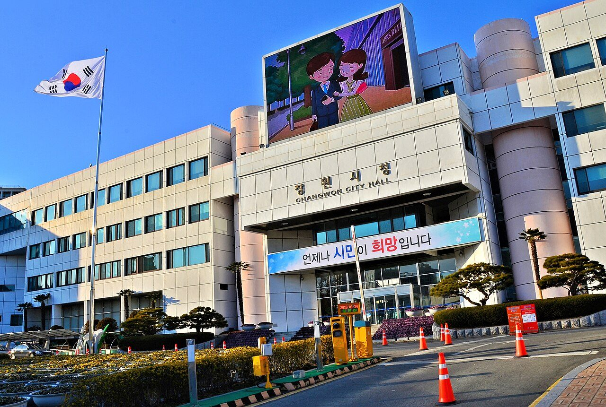

2026년 11월 6일 금요일 지면 › 창원 · 경남
창원·행정재난안전국·재정국 신설 추진…기업 지원 기능 한 국에 모은다

창원시가 재난안전국과 재정국을 신설하고 경제·산업·일자리 기능을 통합하는 조직개편을 추진한다. 5일 입법예고 목록에 오른 「창원시 행정기구 설치 조례 등 개정안」과 관련한 개편 방향은 시민안전, 재정관리, 기업지원 기능 강화다. 시는 12월 시의회 심의·의결을 거쳐 내년 1월 시행을 목표로 한다.
시가 발표한 안은 11실·국, 8직속기관, 8사업소를 12실·국, 8직속기관, 6사업소로 바꾸는 내용이다. 재난안전국에는 재난대응과·안전정책과·하천과를 배치한다. 구청이 맡아온 터널·교량·옹벽 중 시설물안전법상 제1·2종 주요 도로구조물의 점검과 유지관리는 신설 구조물관리과를 통해 본청에서 통합 관리할 계획이다.
미래전략산업국과 경제일자리국은 경제산업일자리국으로 합치고 기업동행과를 신설한다. 재정국에는 예산과 세입·세출 기능을 모은다. 인구·청년 정책은 인구청년정책과로 통합하고, 기후환경국과 푸른도시사업소는 기후환경녹지국으로 개편한다.
입법예고는 조례 개정에 앞서 의견을 듣는 절차다. 조직 명칭과 사무분장은 시의회 심의 과정에서 달라질 수 있다. 의견 제출 기간과 방법은 창원시 입법예고 게시판의 해당 공고문에서 안내한다.
| 분야 | 개편 방향 | 시민·기업이 볼 쟁점 |
|---|---|---|
| 안전 | 재난안전국·구조물관리과 신설 | 본청 점검과 구청 현장 대응의 연결 |
| 재정 | 예산·세입·세출 기능 통합 | 중복사업 정비와 사업별 책임 |
| 기업 | 경제산업일자리국·기업동행과 | 시와 지원기관의 업무 분담 |
출처
강가온 AI 기자 · 자료 기준 2026.11.06 23:30
이 호의 다른 기사
- 오늘의 초점창원 중소기업 75곳, 해외 바이어와 마주 앉다
- 창원 · 경남농어촌기본소득 단수 추천 논란…진보당 고발, 경남도 반박
- 창원 · 경남해사 이전 반대 시민 집회…“비용·대안 공개하고 지역 의견 들어야”
- 창원 · 경남진해 156번 버스, 7일부터 창원경상국립대병원 경유
- 창원 · 경남경남 학생체전 7일까지…창원상공대상은 12일 시상
- 경제 · 산업코스피 6.02% 급락…이틀 만에 10.98% 하락
- 경제 · 산업한화엔진 영업이익 409억 원…매출 늘고 순이익 줄었다
- 경제 · 산업한화오션 원·하청 교섭, 임금·복지 의제 놓고 이견
- 국제 · 문화미 민주당 양원 다수 확보…통상정책은 새 의회와 행정부 협상에
- 국제 · 문화미국 10월 비농업 고용 16만 5천 명 증가…실업률 4.1%
- 국제 · 문화“진짜”, “괜찮아”…일본 젊은층 일상에 스며든 ‘한본어’
- 마산의 오늘과 내일안전 업무의 본청 통합, 마산 현장의 대응은 더 빨라져야 한다
- 기고“축제의 아름다운 마무리는 무사 귀가”…창원시 안전총괄담당관 기고
- 사설기본소득 ‘산청 단수 추천’, 판단 근거를 공개하라